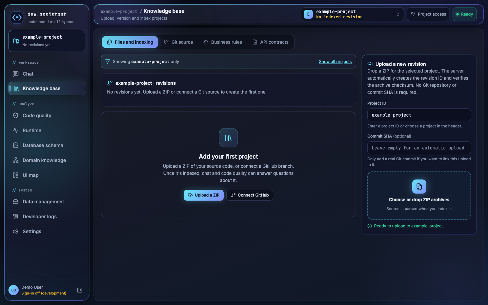

What this topic covers
The Database Schema view turns a saved analysis or local schema text into a visual table-and-relationship diagram. It shows table fields, types, primary and foreign keys, nullability, indexes, warnings, and relationship cardinality.
Step 1: Open the schema view
- Start the application and sign in if your deployment requires OIDC.
- Open the Database Schema tab from the main tab bar.
- Wait for the saved-analysis list to load.
- Choose a saved analysis from the source selector, or choose SQL, DBML, or JSON for a local import.

Step 2: View a saved analysis
- Select Saved analysis.
- Choose the analysis session that contains the schema.
- Wait for the diagram to load; the canvas receives one saved visualization response.
- Use the Fit or layout control when the diagram opens larger than the viewport.
- Drag tables to make related areas easier to read.
Saved analyses are separate from the indexed source revision. If the analysis list is empty, create or save an analysis first, then refresh the schema view.
Step 3: Import SQL, DBML, or JSON locally
- Switch the source selector from Saved analysis to the format that matches your text.
- Paste the schema text into the editor.
- For SQL, include
CREATE TABLEstatements and supported key or index definitions. - For DBML, include
Tabledefinitions and two-endedRefrelationships. - For JSON, provide the normalized schema structure expected by the view.
- Start the parse action and wait for the diagram to replace the editor content.
- Read the warnings panel before trusting a relationship or index that was not drawn.
Parsing happens in the browser. The view keeps warnings for unsupported SQL attributes, unresolved columns, malformed DBML relationships, or other input it cannot preserve.
Step 4: Search and inspect tables
- Enter a table name or field name in the schema search box.
- Review the filtered canvas; tables that do not match are hidden.
- Click a table node to open its details panel.
- Inspect each field’s type, nullable flag, default, primary-key flag, unique flag, foreign-key flag, and source/provenance.
- Use the panel toggle when you need more canvas space, then reopen it to inspect the selected table.
Step 5: Inspect relationships
- Click a relationship edge between two tables.
- Read the source table and column, target table and column, cardinality, and provenance.
- Use the highlighted edge and selected endpoints to follow the dependency across the diagram.
- Check warnings when an edge is missing; unsupported or unresolved references are excluded from the rendered graph.
Foreign-key edges connect table-column ports. Cardinality labels use the relationship metadata; many-to-many DBML relationships require an explicit junction table for the importer to preserve them.
Step 6: Use canvas controls
- Zoom: enlarge or reduce the graph around the current view.
- Fit: bring the full diagram into the available canvas.
- Reset: return the canvas to its initial layout and view.
- Prettify/layout: arrange tables and references for a cleaner reading order.
- Details panel: show or hide the selected table/reference information.
Step 7: Export the schema
- Confirm the diagram contains the tables and relationships you want to keep.
- Use the export controls for SVG or PNG when you need an image.
- Use DBML or JSON when you need a text representation for review or another tool.
- Open the downloaded file and verify that names, keys, and relationships survived the export.
Step 8: Delete an old saved analysis
- Select the saved analysis you no longer need.
- Choose the delete action.
- Read the confirmation dialog and confirm only the intended analysis.
- Refresh the list and select a remaining analysis if you want to continue.
Deletion removes the saved analysis record. Keep an exported DBML or JSON copy first if the analysis is still needed for documentation.
Runtime table usage
When matching runtime data is available, the selected table can show observed table operations and related symbols or routes. Choose the matching project and revision in the runtime scope selector, then compare usage with the static schema. Runtime observations are sampled and do not prove that every query or code path has been observed.
Common problems
- No saved analyses appear
- Confirm that an analysis was created and saved, then refresh. The view loads at most the first 100 analysis records.
- The diagram is empty
- Check the selected source, wait for loading to finish, and read the warnings. For an imported schema, confirm the text matches the selected format.
- A table or edge is missing
- Search may be hiding it, or the parser may have rejected an unsupported definition. Clear the search and inspect warnings.
- SQL import produces warnings
- Reduce the input to supported table, key, index, and foreign-key definitions, then import again. Keep the original SQL unchanged outside the viewer.
- The graph is hard to read
- Use fit, reset, and layout controls, then drag the most important tables into a readable group.
Release source
This guide follows the release schema UI documented in the UI overview and implemented by DatabaseSchemaView.